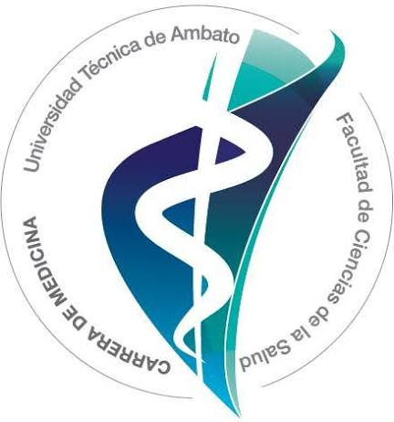

Tutor de estudio sobre determinantes sociales, orden mundial, salud integral y el Sistema Nacional de Salud del Ecuador.

Toca una ficha para ver la definición. Úsalas para repasar antes de la plenaria o de una evaluación.